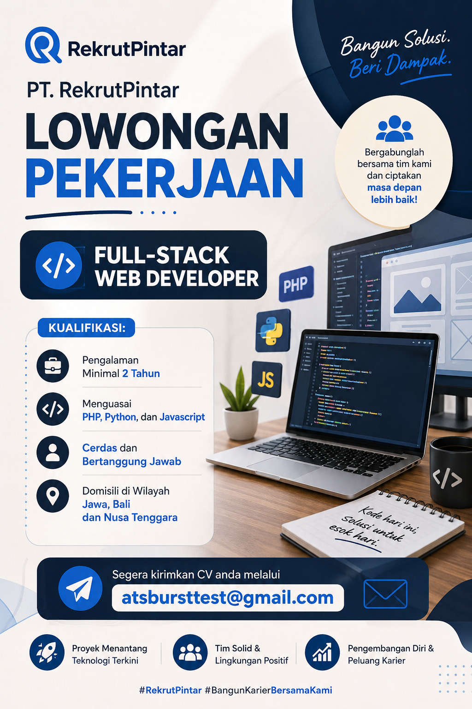

Automating Data Processes with n8n
This project focuses on automating data workflows with n8n to integrate multiple
data sources and improve operational efficiency.
This project was built to help HR and recruitment teams evaluate applicant CVs quickly and objectively with the help of AI. It provides an AI-based system that analyzes job applicants' CVs and delivers automated assessments.
Feel free to try it: send your job application CV in PDF format, type "lamaran kerja" in the Subject line, and email it to atsbursttest@gmail.com. Your CV will be reviewed by AI automatically and you will receive a reply email right away. Enjoy!
← Back to Home